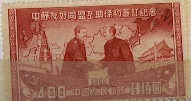
| SOURCE | TITLE| IMAGE MATCH | click to source page |
| www.ebay.com | China PRC Stamps # 74 MNH XF Scott Value $25.00 | eBay | 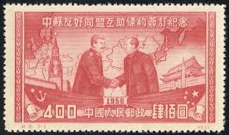 |
| commons.wikimedia.org | File:Chinese stamp 1950.png - Wikimedia Commons | 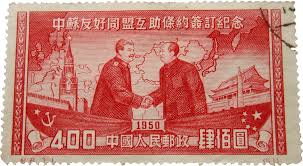 |
| www.walmart.com | 24x36 gallery poster, 1950 Chinese stamp depicting Stalin ... | 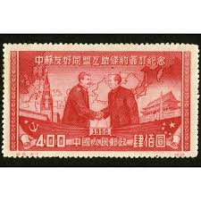 |
| www.eurasiareview.com | Russia Vs China – OpEd – Eurasia Review | 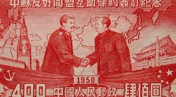 |
| www.ebay.com | China Communist Leaders Mao and Joseph Stalin Map Ships 1950 ... | 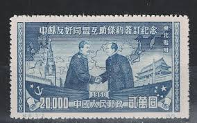 |
| www.hipstamp.com | China - 1950 - Sino-Soviet Treaty - Stalin - MAO TSE Toung ... | 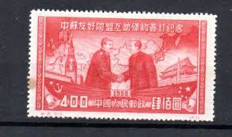 |
| www.shutterstock.com | China Circa 1955 Stamp Printed China Stock Photo 89967385 ... | 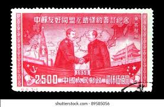 |
| www.facebook.com | What are the expert comments on this 1955 stamp? | 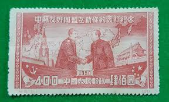 |
| www.alamy.com | 1950 Chinese (People's Republic of China) postage stamp ... | 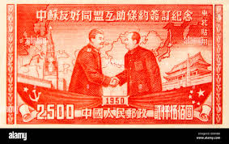 |
| www.hipstamp.com | China Stamp: 1950 Sc#74 Signing Treaty of China & Russia ... | 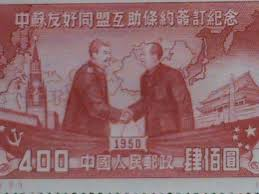 |
| blog.gale.com | Sino-Soviet Treaty Signed | 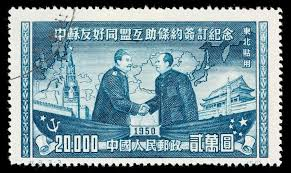 |
| www.bridgemanimages.com | Image of Chinese Postage Stamp Commemorating the Execution ... | 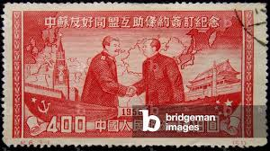 |
| www.youtube.com | China & Russia friendship| CCTV English - YouTube | 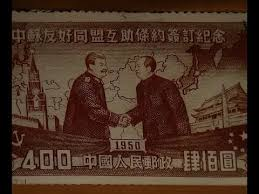 |
| www.ebay.com | People's Republic of China 74-6 / 1950 Stalin and Mao / May ... | 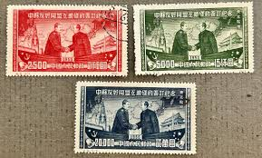 |
| www.xabusiness.com | C8 Scott 74-76 Signing of Sino-Soviet Treaty of Friendship ... | 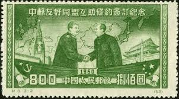 |
| findyourstampsvalue.com | Signing of Sino-Soviet Treaty of Friendship, Alliance and ... | 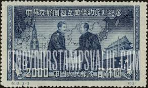 |
| www.ecns.cn | Postal stamps demonstrate friendship of China and Russia ... | 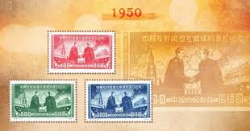 |
| en.wikipedia.org | Moscow–Peking - Wikipedia | 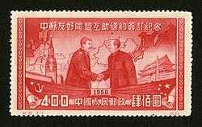 |
| itoldya420.getarchive.net | 9 Treaties With The Peoples Republic Of China As A Party ... | 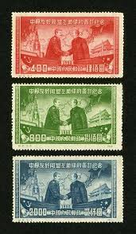 |
| www.dreamstime.com | Chairman Mao Vintage Stamp editorial photo. Image of ... | 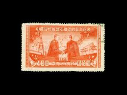 |
| theendofempires.weebly.com | Relationship between the Soviets and China - Ch 38: The End ... | 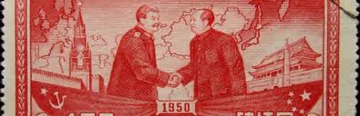 |
| www.wilsoncenter.org | Privilege and Inequality: Cultural Exchange and the Sino ... | 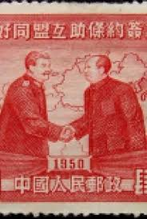 |
| www.cpusa.org | Why we don't quote Mao and Stalin – Communist Party USA | 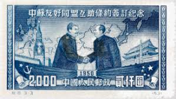 |
| www.pinterest.com | China - People's Republic Of China 1950 Stalin & Mao, 800 ... | 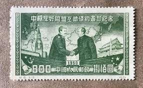 |
| colnect.com | Stamp: Stalin meets Mao Tse-tung (Reprint) (China, People's ... | 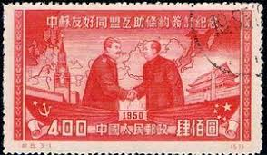 |
| www.bobshop.co.za | China - CHINA, 1950 Communist Leaders Stalin and Mao Tse ... | 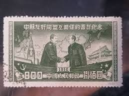 |
| origins.osu.edu | Learning to Love the Nuclear Pariah: From China to North ... | 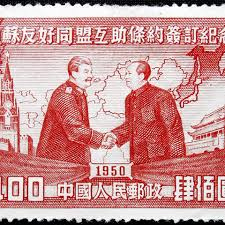 |
| www.ebay.com | Stamp China People's Republic Mao Stalin 1950 MiNr 86 ... | 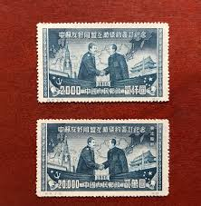 |
| worldstampsproject.org | People's Republic of China – varieties of postage stamps ... | 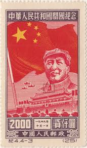 |
| shafa.ua | Марка "лін і мао целюн " 1950 р. — ціна 1500 грн у каталозі ... | 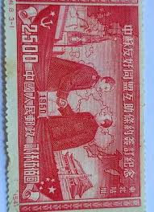 |
| commons.wikimedia.org | File:Chinese stamp in 1950 edit 1.jpg - Wikimedia Commons | 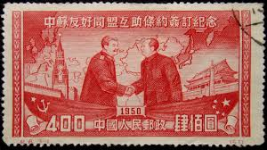 |
| www.facebook.com | Tem China Bô 3tem 250ngàn . | 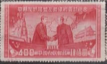 |
| shieldsstamps.com.au | PRC China 1959 10th Anniversary of Founding of PRC 5th Issue ... | 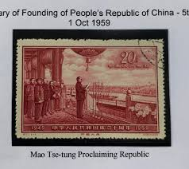 |
| www.alamy.com | Old chinese postage stamp mao hi-res stock photography and ... | 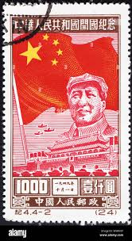 |
| courses.lumenlearning.com | Political, Economic, and Military Dimensions | HIST 1302: US ... | 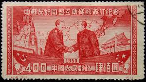 |
| cornerblockstamps.ca | Stamps - Corner Block Stamps | 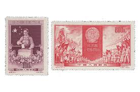 |
| www.history.ox.ac.uk | Communism in an Enchanted World: Supernatural Politics in ... | 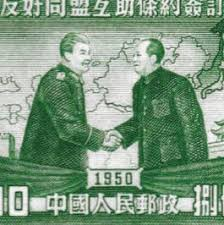 |
| www.ebay.com | China Stamps 1950 C8, Sino-Soviet Friendship Treaty sign ... | 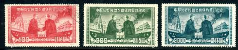 |
| www.linns.com | In Chinese stamp market, early Taiwan issues strong: Tip of ... | 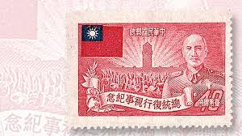 |
| www.freestampcatalogue.com | Stamps from China People's Republic - Freestampcatalogue.com ... | 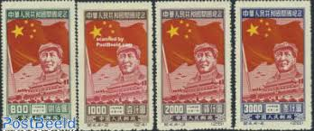 |
| www.instagram.com | In 1949, with the founding of the People's Republic of China ... | 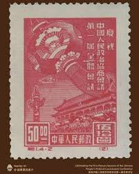 |
| www.paulfrasercollectibles.com | The 5 most valuable Chinese stamps | 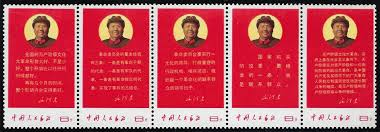 |
| www.reddit.com | My new old chinese stamps arrived me today : r/philately | 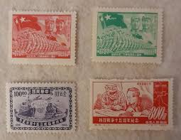 |
| santamariatimes.com | Today in History: Josef Stalin became the undisputed ruler ... | 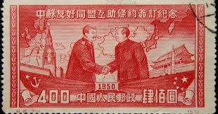 |
| www.istockphoto.com | 10+ Postage Stamp Mao Tse Tung Stock Photos, Pictures ... | 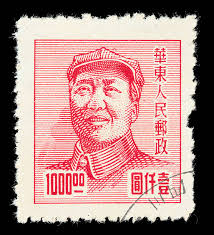 |
| www.xabusiness.com | C16 Scott 155-158 15th anniv. of War of Resistance against ... | 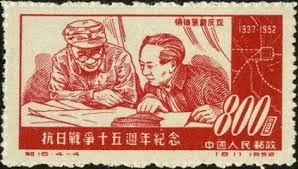 |
| uk.news.yahoo.com | China and Russia's uneven relationship can be explained with ... | 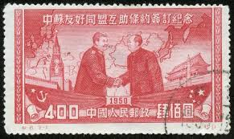 |
| www.ebay.com | CHINA PRC 1950 SINO-SOVIET TREATY, MAO and STALIN ... | 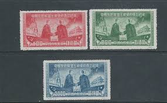 |
| www.alamy.com | Mao tse tung postage stamp china hi-res stock photography ... | 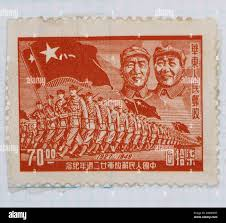 |
| www.xabusiness.com | C27 Scott 231-233 1st Anniv. of Death of J.V. Stalin - China ... |  |
| en.wikipedia.org | Sino-Soviet Treaty of Friendship, Alliance and Mutual ... | |
| www.alamy.com | CHINA - CIRCA 1949: A stamp printed in China shows General ... | |
| www.russianlife.com | The Sino-Soviet Love-Hate Relationship - Russian Life | |
| www.xabusiness.com | C20 Scott 194-197 35th Anniv. of Great October Revolution ... | |
| dominotheory.com | Russia Wants 'Friendship,' China Just Wants to Be 'Friendly ... | |
| www.ebay.com | China Communist Leaders Lenin and Joseph Stalin meeting 1952 ... | |
| johnbatchelor.substack.com | The Rise and Fall and Rise of Communism with Sean McMeekin | |
| pixabay.com | Stamp Shaking Hands Handshake - Free photo on Pixabay | |
| qalam.global | ONE MINUTE BEFORE NUCLEAR DISASTER — Qalam |
{kind=link}
{kind=link}